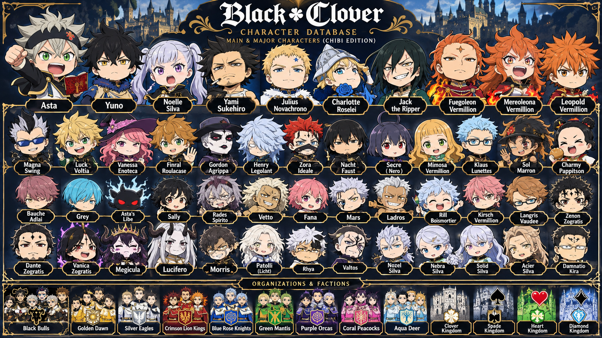

Creator
Yūki Tabata — writer and illustrator.
A world governed by magic produces two extraordinary rivals: Asta, born without mana, and Yuno, a prodigy entrusted with a four-leaf grimoire. Their shared ambition—to become Wizard King—draws them into the military, political and supernatural conflicts shaping the four-leaf kingdoms.
Series key art and visual identity.

Black Clover promotional poster · externally hosted image source
The poster is placed as the opening visual reference for the title. A locally stored repository copy remains to be added; this page currently loads the image from its external image host.
Black Clover is a fantasy action series written and illustrated by Yūki Tabata. It follows Asta and Yuno, two boys raised together at a church in the remote village of Hage. They promise to compete for the title of Wizard King, the Clover Kingdom's highest magical and military office.
Yūki Tabata — writer and illustrator.
Weekly Shōnen Jump from 2015; later transferred to Jump GIGA. The manga concluded in 2026.
Asta has no magic in a society where mana is treated as an ordinary fact of life. His five-leaf grimoire connects him to Anti-Magic and the devil Liebe.
Asta and Yuno seek to become Wizard King, but their paths challenge the kingdom's assumptions about talent, class and worth.
The narrative begins as a competitive coming-of-age adventure and expands into a kingdom-scale and then world-threatening conflict. It combines squad missions, tournament-like examinations, dungeon exploration, political conspiracies, historical revelations, devil mythology and large-scale magical warfare.
The story takes place on a continent divided among four major kingdoms. Magic influences government, warfare, social class, education, labor and everyday life. Mana is present in the natural environment, and the ability to sense and use it is a defining feature of most people.
The central setting. Its monarchy and noble houses sit above commoners and peasants in a rigid hierarchy. The Magic Knights defend the kingdom and compete for recognition. Its royal families include House Silva, House Vermillion and House Kira.
A militarized neighboring state known for experimentation, strategic resource use and the enhancement of soldiers through magic. Its military structure and conflicts with Clover shape the early international story.
A mana-rich nation whose culture and defenses are closely tied to nature. Its queen, Loropechika, inherits knowledge through a royal succession. Its mages use Mana Method and runes to shape spells with environmental mana.
A northern kingdom with a harsh climate and a history tied to the Zogratis family. The Dark Triad seizes power and uses devil contracts to build a military threat around the Qliphoth and the Underworld.
Clover society distinguishes royals, nobles, commoners and peasants. Magical quantity and refinement are often treated as signs of birthright and social value. Royal families tend to possess immense mana; peasants may face prejudice even when their practical abilities are exceptional. The Magic Knights can provide a path to status, but their internal culture can reproduce class bias.
The natural world contains mana and elemental spirits. Beyond the human world lies the Underworld, home to devils whose power can enter human affairs through contracts, possession and ritual openings. The elves' history, the human-devil conflict and the Qliphoth connect the present to ancient events. The series' cosmology is not simply a good-versus-evil division: historical manipulation, prejudice and political ambition shape how supernatural power is used.
The massacre of the elves, the role of Licht and the first Wizard King, and the later truth about the devils establish a buried history that undermines the official story inherited by the Clover Kingdom. The past becomes an active political and moral force rather than distant background exposition.
The narrative follows Asta's growth from an overlooked village orphan to a central defender of the human world. The chronology below is organized by major story developments rather than a fabricated day-by-day calendar.
The elf-human coexistence, Licht and Tetia's relationship, the tragedy that destroys the elf community, and the first Wizard King's intervention establish the historical wound later exploited by Zagred.
Asta and Yuno are abandoned at the same church and grow up as brothers in all but blood. Their rivalry and shared promise form the emotional foundation of the series.
At fifteen, Yuno receives a four-leaf grimoire. Asta's apparent failure is reversed when he receives a five-leaf grimoire containing Anti-Magic. Both enter the Magic Knights.
The Black Bulls undertake missions, encounter the Eye of the Midnight Sun, explore a dungeon and become involved in conflicts with the Diamond Kingdom and the royal capital.
The elves' souls awaken in human hosts. The conflict exposes the truth behind the ancient massacre and the devil Zagred's manipulation.
The Clover and Heart Kingdoms prepare against the Spade Kingdom. The protagonists study advanced mana techniques and develop new combat abilities.
The Dark Triad's plans threaten to open the Underworld. The Magic Knights and their allies fight to rescue captives and prevent the devils' emergence.
The conflict expands beyond the Dark Triad to Lucius, whose plan seeks to remake humanity. Asta, Yuno and their allies confront the final threat to human autonomy.
The manga concludes the central rivalry and the question of who will become Wizard King, then depicts the aftermath and the characters' paths after the decisive battle.
Flashbacks should be placed at the historical point they depict, while the reading order should remain the manga's published sequence. The elf history is revealed gradually; presenting every flashback at the start would spoil the intended mystery. Exact chapter and episode ranges should be attached only after a dedicated source-by-source index pass.
Arc labels can vary among fan guides and publication divisions. The following groups the major narrative movements by their central conflict and consequence.
Asta and Yuno enter the world of professional magic knights. Asta joins the Black Bulls; Yuno joins the Golden Dawn. Their different squad environments begin to shape their development.
The Clover and Diamond kingdoms' rivalry becomes tangible as squads explore a dangerous dungeon and compete over its magical treasures. Asta, Yuno and their allies face Mars and uncover the human cost of Diamond's military program.
The Eye of the Midnight Sun attacks the Clover capital. The incident exposes the kingdom's vulnerability and raises the stakes beyond squad rivalry.
The Black Bulls pursue the group and encounter Vetto. The Underwater Temple battle tests the squad's coordination and reveals the depth of the enemy's hostility.
Asta seeks a way to address his arms' curse. The Witch Queen's intervention reveals more about his Anti-Magic and the political complexity surrounding the Black Bulls.
The kingdom organizes a selection tournament to build a force against the Eye of the Midnight Sun. Rivalries, teamwork and the social divide between nobles and commoners are placed under pressure.
The elf souls awaken in human bodies, turning allies against one another. The truth behind the massacre, Licht's role and Zagred's manipulation transforms the meaning of the conflict.
The Clover and Heart Kingdoms cooperate against the Spade threat. Training introduces Mana Method, runes and deeper control of natural mana.
The Magic Knights launch a coordinated operation to rescue Yami and William and stop the Dark Triad's plan. Devil powers, contracts and high-level transformations redefine the battlefield.
The story reveals the larger design behind the Zogratis family and Lucius's attempt to impose a supposedly perfected world. The final battles test the alliance and the protagonists' competing visions of leadership.
Some arc boundaries overlap because one conflict develops through several locations and battles. The final arc's individual confrontations should be cross-indexed with the character and faction dossiers rather than treated as isolated fights.
The character archive contains 51 dedicated individual profile pages covering the current principal-character roster. Each dossier includes identity, history, personality, affiliations, magic and abilities, relationships, chronology, achievements, continuity notes and references. The archive will continue expanding as additional named characters are catalogued.

Database status: all 51 linked character profile destinations are now populated with individual dossiers. The next expansion pass will add further named characters, spirits, devils, historical figures and supporting cast members. Individual portrait artwork remains a separate visual-asset task; no unrelated image is substituted for a character portrait.
Combat in Black Clover is built around mana, individual magical attributes, grimoires, spell construction, training, environmental mana and tactical matchups. Raw magical quantity matters, but technique, compatibility, creativity and teamwork can overturn an apparent advantage.
A defensive layer of mana around the body that improves protection and control.
Advanced control of surrounding mana, allowing a mage to sense, draw upon and cast from a broader area.
Heart Kingdom technique using natural mana and arrays of runes to shape complex spells.
A technique that manifests an attribute's natural phenomenon more directly by using natural mana.
Elemental spirits choose compatible hosts and greatly amplify their attributes. Salamander is associated with fire, Undine with water, Sylph (Bell) with wind, and the earth spirit is revealed in the later story. Spirit Dive allows a host to merge with a spirit's power.
Asta does not possess ordinary mana and cannot cast conventional spells. His five-leaf grimoire contains Anti-Magic, which negates or cuts through magic. Liebe is the devil whose Anti-Magic power is tied to the grimoire. Asta's swords carry distinct properties: the Demon-Slayer Sword can cut or deflect magic; the Demon-Dweller Sword can absorb and release magical power; the Demon-Destroyer Sword can undo lingering spell effects; and the Demon-Slasher Katana is associated with Yami and Asta's later fighting style. Anti-Magic is not a universal answer to every problem: timing, physical range, technique, opponent abilities and the condition of the bond all matter.
Devils inhabit the Underworld and possess immense magical power. Humans may obtain devil power through contracts or other forms of connection. Devil hosts and Devil Union combine human combat ability with a devil's power, but the relationship carries risk and conditions. Asta's bond with Liebe differs from the Dark Triad's domination-based arrangements.
Profiles should distinguish mana quantity, control, spell versatility, speed, physical ability, durability, tactical intelligence, teamwork, special transformations and matchup-specific counters. A single universal power ranking would misrepresent the series' situational combat logic.
Each organization is intended to receive an individual dossier and a representative group image. The index below identifies the major political, military and supernatural bodies; dedicated dossiers and group artwork remain to be created.
The Eye of the Midnight Sun is not interchangeable with the elf people as a whole: it is a specific movement whose leadership and members are entangled with the reincarnation plot. The Dark Triad is the ruling Zogratis sibling group, not the entirety of Spade society. Devils are a species and social order from the Underworld, not a single unified human-style military faction. The Magic Knight squads are separate units under the Clover Kingdom's military structure.
Dossier status: these entries are the organization index plan. The linked dossier files and commissioned group pictures have not yet been created.
Relationships in Black Clover are built through rivalry, found family, mentorship, inherited conflict, loyalty and reconciliation. The following map focuses on relationships that drive the central narrative.
They are childhood companions and lifelong rivals. Yuno's talent never removes his respect for Asta; Asta's persistence never requires him to diminish Yuno. Their rivalry is a shared promise and a continuing standard of self-improvement rather than a relationship founded on hatred.
Their connection begins through the five-leaf grimoire and develops into a partnership. Both have experienced rejection and isolation. Their bond contrasts with devil hosts who treat devils as tools or sources of domination.
The squad becomes Asta's found family. Yami accepts members whom conventional institutions might reject, and the squad's misfits gradually become a dependable unit. Their loyalty is demonstrated through rescue, protection and coordinated battle.
Their relationship develops through mutual support and trust. Noelle's growth involves overcoming the emotional damage of her family's treatment and learning to control her power. Asta's acceptance of her is important, though his attention is often focused on his larger goals and friendships.
The Golden Dawn offers Yuno a formal environment in which his ability and leadership are recognized. His relationship with squad members becomes more complex as the elf reincarnation crisis exposes the vulnerability of the institution and its people.
Yami's leadership is unconventional, but his willingness to recognize potential in outsiders shapes the Black Bulls. His trust is often expressed through demanding that members exceed their limits rather than protecting them from every challenge.
The story contains affection, admiration, jealousy and romantic subtext, but not every emotional bond becomes a confirmed relationship. The archive should distinguish explicit canon, character feelings, fan interpretation and unresolved implications.
Yūki Tabata's manga began in Weekly Shōnen Jump in February 2015, transferred to Jump GIGA in 2023 and concluded with chapter 392 in 2026. MANGA Plus lists the series as completed. The manga is the primary source for the full story and ending.
Studio Pierrot's first television run contains 170 episodes and aired from 2017 to 2021. It adapts the manga through the Spade Kingdom preparation period, but does not cover the manga's complete final story. The continuation is separately marketed as Black Clover 2nd Season and is part of the anime's ongoing adaptation history.
The 2023 film follows Asta and the Magic Knights against former Wizard Kings, including Conrad Leto. It is a standalone anime-original story set in the series' world, rather than a required manga chapter adaptation. Treat it as a separate continuity item and do not insert its events into manga chronology as though they were canon.
When comparing manga and anime, track episode-to-chapter coverage, reordered scenes, anime-original missions, pacing, omitted dialogue, visual staging and soundtrack-driven changes. The 2023 film should remain clearly labeled as a standalone film story. Exact episode-to-chapter mapping is reserved for a dedicated guide table.
The Clover Kingdom claims to reward magical achievement, yet its institutions are shaped by birth, mana reserves and family reputation. Asta's lack of mana makes him a direct challenge to a society that mistakes inherited advantage for personal worth. The series does not suggest that effort alone instantly removes structural inequality; it shows how individual achievement exposes the limits of the hierarchy.
Asta's repeated refusal to surrender is more than a motivational catchphrase. It is a method of resisting the identity imposed on him by people who equate magical ability with human value. His persistence becomes meaningful because it is paired with training, practical adaptation and reliance on others.
Asta and Yuno represent different forms of talent and development, but their competition is rooted in mutual recognition. The story proposes that another person's excellence can become a reason to improve rather than a justification for resentment.
The Black Bulls provide a home for people who have been rejected, misunderstood or marginalized. Their unconventional culture becomes a counterexample to the kingdom's obsession with status. Belonging is built through responsibility and loyalty, not pedigree.
The elf conflict shows how fear, manipulation and collective prejudice can produce atrocities that later generations inherit. Understanding the past does not erase responsibility, but it makes simplistic narratives of heroes and monsters inadequate.
Magic is both a personal capability and a public force. The strongest characters are repeatedly judged by whether they protect others, how they use authority and whether they accept the costs of their choices. The Wizard King ideal is therefore ethical as well as martial.
The final conflict challenges the idea that peace achieved by removing choice is genuine salvation. A world without uncertainty may also be a world without autonomy. The narrative places human imperfection, struggle and freedom against the temptation of total control.
Asta is not successful because he acts alone. His achievements depend on people with different attributes, histories and limitations. The series frames hope as something sustained through cooperation, not merely optimism in isolation.
Full-manga spoilers. The manga's final conflict resolves the threat posed by Lucius Zogratis and returns the story to the promise that began with Asta and Yuno in Hage: which of them will become Wizard King?
Lucius seeks to remake humanity under a single imposed design. His vision treats individual freedom and unpredictable human lives as problems to be corrected. The final conflict is therefore not only a contest of magical strength; it is a confrontation over who has the right to decide humanity's future.
Asta and Yuno fight on the same side against the greater threat, but their shared ambition remains unresolved until the final contest. Their duel brings the central promise back into focus and tests the meaning of their rivalry after everything they have endured.
The final chapter, chapter 392, is titled “Beyond Not Giving Up.” The conclusion has Asta win the decisive contest with Yuno and claim the Wizard King title, completing the goal that has guided him since childhood.
The ending brings the story back to its original measure of greatness: not inherited mana or social class, but the ability to protect people and earn their trust. Yuno's acceptance of the outcome preserves the respect at the heart of their rivalry. The resolution does not erase the kingdom's past inequalities; it establishes a new standard for leadership and leaves the characters to pursue their futures.
The ending is concise relative to the scale of the final conflict. Readers may differ on how much institutional reform is implied, how the Wizard King role will change in practice and how the world will address the legacy of devils, elves and royal privilege. Those questions should be treated as interpretation where the text does not provide a detailed policy answer.
The moral of Black Clover is that a person's worth is not determined by the advantages they were born with, and that meaningful strength is measured by what someone chooses to do with the abilities and opportunities they have.
Asta is judged by a standard that makes his dream appear impossible. He refuses to let that judgment become his identity and develops a different way to participate in a world built around magic.
Persistence is not a substitute for preparation. Asta trains relentlessly, learns from defeat and adapts his methods. Determination becomes effective when translated into action.
Yuno's exceptional ability is real, but it does not make him more deserving of dignity than Asta or the people born with less mana. The series challenges the confusion of talent with moral superiority.
Healthy competition recognizes another person's achievement without turning it into hatred. Asta and Yuno push each other while remaining allies.
The Black Bulls show that people with difficult histories and unconventional personalities can form a dependable family when they are given trust and held accountable to one another.
The elf tragedy demonstrates the destructive power of manipulation and prejudice. A society cannot build a just future by ignoring the harm embedded in its history.
Leadership is not simply the right to command. The Wizard King ideal is strongest when authority is used to defend people and widen opportunity rather than impose a ruler's preferred world.
Peace without freedom can become another form of oppression. The story values a world where people can make mistakes, change and determine their own paths.
Never surrender your right to define your own worth. Build your strength through effort, accept help, respect the people who challenge you, and use whatever power you possess to protect the freedom and dignity of others.
Primary publication and official franchise resources, supplemented by reputable reporting for release and adaptation status.
Editorial standard: canon plot facts, anime-only material, production facts and interpretive analysis should be labeled separately. Exact chapter and episode mappings, full cast completeness, portrait assets and organization group images require additional dedicated research and page creation.